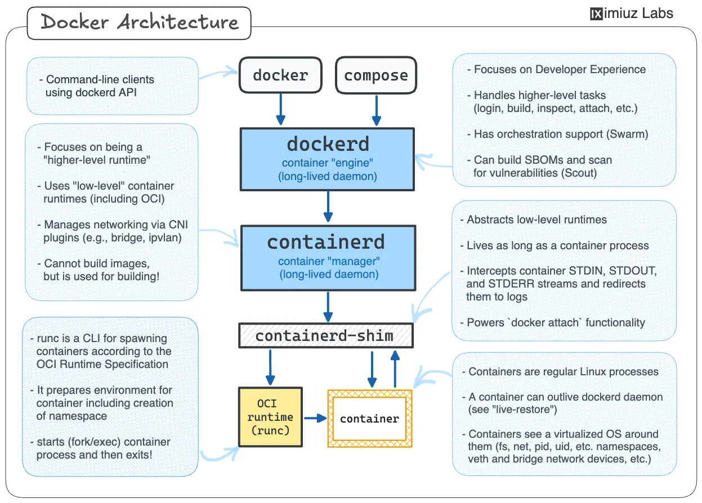

Index
Table Of Contents
Docker Notes
What is docker?
Docker is a tool that provides reproducible environments for applications
Docker helps developers build, share, run, and verify applications anywhere — without tedious environment configuration or management.
Problem and how docker solves the issue
- “Works on my machine” syndrome everywhere. -> reproducibility from a image config.
Works on my machineusually happens due to version mismatch, environment inconsistencies, platform dependencies and so on.
Key terminologies
- Image - a
read-onlyblueprint/template(likeclassinOOPslanguages). - Container:
- actual entity from the blueprint.
- actual running instance of a template.
- like
objectinOOPslanguages. - it contains your application, all its dependencies, runtime environment.
- Dockerfile:
- Instruction on building the image.
- contains
base image/os, dependencies, commands, startup process.
- Registry:
- A place to store the images.
- Like
githubfor repos, but for docker images. - Ex: docker hub
Virtual Machines(VM) vs Docker
| VM | Docker Container |
|---|---|
| Full OS per VM | Shares host kernel |
| Heavy | Lightweight |
| Slow boot | Fast startup |
| GBs in size | MBs usually |
| Hypervisor needed | Docker Engine |
Hypervisor
Hypervisoris a software that allows multiple virtual machines(VM) run on a single physical computer.- It virtualizes hardware, allocates resources, isolates host OS, manage VM execution.
- Each VM gets its own kernal, os, virtual hardware.
Types of Hypervisors
Type 1: runs on bare metal.Type 2: runs on anotherOS.
Docker engine
- allows bundling, packaging, execution of a docker container.
- Ex:
dockerd,docker cli - since, docker container runs on the
OS host kernal,docker engineusually works with process isolation(likesandbox).
What is an base image and is it required?
A base image gives your container a starting filesystem + runtime environment. It usually includes a shell, filesystem, binaries, runtime, libraries, package manager(if included).
NOTE: we can create a docker image without any base image, by using
FROM scratchkeyword, usually when working with a statically compiled language(simply to execute the binary directly).
Limitations of Docker Runtime
- Containers share the host kernel instead of running their own full OS.
- Because of this, containers are limited by the host OS kernel compatibility.
Native Compatibility
- Linux containers run natively on Linux.
- Windows containers run natively on Windows.
macOS / Windows Case
- On macOS and Windows,
Docker Desktopcreates a lightweight Linux VM internally. - Docker containers actually run inside that Linux VM.
- This allows Linux-based images to run on:
- Linux
- Windows
- macOS
Important Limitation
- Since Linux containers depend on the Linux kernel:
- Linux containers cannot run directly on non-Linux kernels.
- Similarly:
- Windows containers require the Windows kernel.
- Windows containers cannot run natively on Linux/macOS.
Simple Mental Model
Linux Container -> Needs Linux Kernel
Windows Container -> Needs Windows Kernel
Docker installation
- Visit docker home page
- click on
download docker desktopto get bothCLIandGUI. - select your respective
OSand install it. - verify docker installation status with:
docker --versioncommand in the terminal.
basic docker commands
docker pull <image-name>-> pulls a specific image from theregistry.docker pull <image-name>:<tag>-> pulls a specific version of a specific image from theregistry.docker images-> list all docker images in the system. Once a docker image is pulled, it stays in the computer, until it is removed.docker run <image-name>:- to create a new container of the image and runs it in attached mode(unless specified with detached mode).
- It always creates a new container, even already exists for the image.
- if the images not exists, it pulls from the registry and run it.
docker run --name <container-name> <image-name>-> assigns a custom name to the container instead of random unique one.docker ps-> shows all running containers only.docker ps -a-> shows all containers(running + stopped).docker logs <container-name/id>-> shows the logs of the container with id or name in thestdout.docker run -it <image-name>:i-> interactive mode.t-> allocatespseudo TTY(terminal).- Docker’s interactive mode allows direct interaction with a running container’s shell, enabling real-time command execution and interaction with its file system. This mode is particularly useful for debugging, development, and troubleshooting within a container.
Attached Mode:- In attached mode, the container’s standard input, output, and error streams are directly connected to your terminal. You see the container’s output in real-time in your terminal window.
- This mode is suitable for interactive tasks, debugging, or applications that require direct user interaction or need to be stopped when the terminal is closed.
- By default, docker run starts a container in attached mode unless specified otherwise
Detached Mode:- In detached mode, the container runs in the background, independent of your terminal session.
- You do not see the container’s output directly in your terminal, and your terminal remains free for other commands.
- This mode is ideal for services or applications that need to run continuously without requiring immediate attention or user interaction.
- You typically use the -d or –detach flag with docker run to start a container in detached mode.
docker attack <container-name/id>-> attaching to a detached container with id or image.- To detach from a container without stopping it, you typically use the key sequence Ctrl+P followed by Ctrl+Q.
docker start <container-name/id>-> to restart the stopped container with id or image.docker stop <container-name/id>-> to stop the running container with id or image.docker rmi <image-name>-> remove unused image to save disk space.docker rm <container-name>-> remove unused container to save disk space.docker image prune-> removes all unused images.docker container prune-> removes all unused containers.docker exec -it <container-name/id>-> runs commands on the running container with id or name and show the output instdout.
Dockerfile and how to use it?
Dockerfile contains template on the docker image. it usually contains application logic, environment, dependencies and startup command.
Dockerfileusually works on the principle of layering. i.e. creating a new image on top of another image.
Sample Dockerfile and it’s explanation
# lightweight base image
FROM node:10-alpine
# working directory inside container
# all upcoming commands will be executed from here
WORKDIR /app
# copy dependency/configuration files first
# this helps docker layer caching
# installation steps rerun only if these files change
COPY package*.json ./
# run commands during image build time
# usually used for installing dependencies/setup
RUN npm install
# copy remaining source code/files
# files inside .dockerignore are excluded automatically
COPY . .
# declare the port used by the application
# this is only metadata/documentation
# actual port mapping should be done while running
EXPOSE 8080
# default startup command for container
CMD ["node", "app.js"]
After creating a
Dockerfilerun:docker build -t <tag-name> .-> to build it.
Port Mapping
- docker containers runs on isolated environment(docker engine is responsible for process isolation).
- but sometimes our other external application may be need to communicate with the docker container instance.
- to address this issue we use a concept called
port mapping.
docker run -p <host-port>:<container-port> <image-name>
volumes
- since, docker runs in a isolated environment, usually data from native system to the container or data from one container to another container can’t be shared.
- to address this issue, allowing data persistance, we use a concept called
volumes.
docker run -v <host-path>:<container-path> <image-name>
docker volume create <volume-name>-> creates a new volume.docker volume ls-> list docker volumes.docker volume inspect <volume-name>-> inspect docker volume.docker volume rm <volume-name>-> remove a docker volume.
What is docker-compose and why is it needed?
- A real world application usually contains many services such as, frontend, backend, database.
- each service depends on various others like frontend depends on backend, while backend depends on database.
- so it is hard to scale effectively.
- also for each service to connect with one another we need a manual network setup using docker.
- manual process are error prone and hard to scale effectively.
- docker compose is way to write on how different services interact and depends on each other and takes care of it automatically.
Sample docker-compose.yml and it’s explanation
# version name
version: "1.0"
services:
# frontend application
frontend:
build: ./frontend
# expose frontend to host machine
ports:
- "5173:5173"
# frontend should start after backend
depends_on:
- backend
# backend application
backend:
build: ./backend
# expose backend api to host machine
ports:
- "8080:8080"
# environment variables for backend
environment:
MONGO_URL: mongodb://database:27017/app
# backend should start after database
depends_on:
- database
# mongodb database service
database:
image: mongo
# persist database data using volumes
volumes:
- mongo-data:/data/db
# expose database port (optional for local debugging)
ports:
- "27017:27017"
# named volume managed by docker
volumes:
mongo-data:
Docker architecture

References
- Docker docs official
- Linkedin docker notes
- Github cheatsheet -> contains useful info about commands and it’s flags.